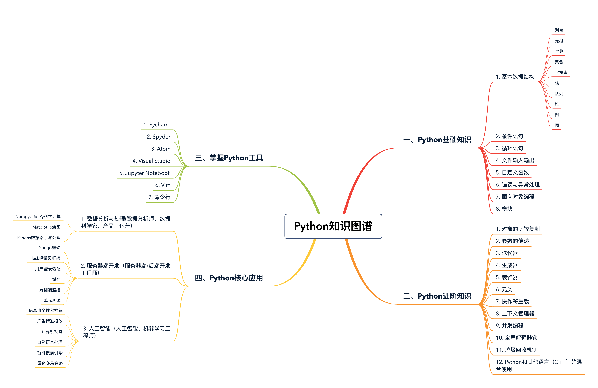

- 00 开篇词 从工程的角度深入理解Python.md
- 01 如何逐步突破，成为Python高手？.md
- 02 Jupyter Notebook为什么是现代Python的必学技术？.md
- 03 列表和元组，到底用哪一个？.md
- 04 字典、集合，你真的了解吗？.md
- 05 深入浅出字符串.md
- 06 Python “黑箱”：输入与输出.md
- 07 修炼基本功：条件与循环.md
- 08 异常处理：如何提高程序的稳定性？.md
- 09 不可或缺的自定义函数.md
- 10 简约不简单的匿名函数.md
- 11 面向对象（上）：从生活中的类比说起.md
- 12 面向对象（下）：如何实现一个搜索引擎？.md
- 13 搭建积木：Python 模块化.md
- 14 答疑（一）：列表和元组的内部实现是怎样的？.md
- 15 Python对象的比较、拷贝.md
- 16 值传递，引用传递or其他，Python里参数是如何传递的？.md
- 17 强大的装饰器.md
- 18 metaclass，是潘多拉魔盒还是阿拉丁神灯？.md
- 19 深入理解迭代器和生成器.md
- 20 揭秘 Python 协程.md
- 21 Python并发编程之Futures.md
- 22 并发编程之Asyncio.md
- 23 你真的懂Python GIL（全局解释器锁）吗？.md
- 24 带你解析 Python 垃圾回收机制.md
- 25 答疑（二）：GIL与多线程是什么关系呢？.md
- 26 活都来不及干了，还有空注意代码风格？！.md
- 27 学会合理分解代码，提高代码可读性.md
- 28 如何合理利用assert？.md
- 29 巧用上下文管理器和With语句精简代码.md
- 30 真的有必要写单元测试吗？.md
- 31 pdb & cProfile：调试和性能分析的法宝.md
- 32 答疑（三）：如何选择合适的异常处理方式？.md
- 33 带你初探量化世界.md
- 34 RESTful & Socket：搭建交易执行层核心.md
- 35 RESTful & Socket：行情数据对接和抓取.md
- 36 Pandas & Numpy：策略与回测系统.md
- 37 Kafka & ZMQ：自动化交易流水线.md
- 38 MySQL：日志和数据存储系统.md
- 39 Django：搭建监控平台.md
- 40 总结：Python中的数据结构与算法全景.md
- 41 硅谷一线互联网公司的工作体验.md
- 42 细数技术研发的注意事项.md
- 43 Q&A：聊一聊职业发展和选择.md
- 加餐 带你上手SWIG：一份清晰好用的SWIG编程实践指南.md
- 结束语 技术之外的几点成长建议.md
01 如何逐步突破，成为Python高手？
你好，我是景霄。
工作中，我总听到很多程序员抱怨，说现在的计算机编程语言太多了，学不过来了。一些人Java用了很多年，但是最近的项目突然需要用Python，就会不知所措，压力很大。
众所周知，Facebook的主流语言是Hack（PHP的进化版本）。不过，我敢拍着胸脯说，就刚入职的工程师而言，100个里至少有95个，以前都从未用过Hack或者PHP。但是，这些人上手都特别快，基本上一两周后，日常编程便毫无压力了。
他们是怎么做到的呢？
事实上，他们遵循的，正是我在开篇词中提到的方法，也是本专栏学习的中心观点：“从工程的角度去学习Python”。那么具体来说，到底要怎么学，学习的过程中又要特别注意哪些地方呢？
不同语言，需融会贯通
其实，如果你在学一门语言的时候多阅读、多练习、多思考，你就会发现，不同语言都是类似的。编程语言本就是人类控制计算机的指令，语法规则等方面自然大同小异。
而在原有基础上，学习一门新的编程语言，其实也没有那么难，你首先要做到的是明确区分。比如，在学习Python的条件与循环语句时，多回忆一下其他语言的语法是怎样的。再如，遇到Python中的字符串相加时，你能分析出它的复杂度吗？再联想到其他语言，比如Java中字符串相加的复杂度，它们之间有什么相同点、又有什么区别呢？
除了能够明确区分语言的不同点，我们还要能联系起来灵活运用。比如，最典型的“编程语言两问”：
你了解你学过的每种编程语言的特点吗？
你能根据不同的产品需求，选用合适的编程语言吗？
举个例子，Python的优点之一是特别擅长数据分析，所以广泛应用于人工智能、机器学习等领域，如机器学习中TensorFlow的框架，就是用Python写的。但是涉及到底层的矩阵运算等等，还是要依赖于C++完成，因为C++的速度快，运行效率更高。
事实上，很多公司都是这样，服务器端开发基于Python，但底层的基础架构依赖于C++。这就是典型的“不同需求选用不同语言”。毕竟，你要明白，哪怕只是几十到几百毫秒的速度差距，对于公司、对于用户体验来说都是决定性的。
唯一语言，可循序渐进
当然，如果Python是你学的第一门编程语言，那也不必担心。我们知道，虽然同为人机交互的桥梁，Python语言比起C++、Java等主流语言，语法更简洁，也更接近英语，对编程世界的新人还是很友好的，这也是其显著优点。这种情况下，你要做的就是专注于Python这一门语言，明确学习的重点，把握好节奏循序渐进地学习。
根据我多年的学习工作经验，我把编程语言的学习重点，总结成了下面这三步，无论你是否有其他语言的基础，都可以对照来做，稳步进阶。
第一步：大厦之基，勤加练习
任何一门编程语言，其覆盖范围都是相当广泛的，从基本的变量赋值、条件循环，到并发编程、Web开发等等，我想市面上几乎没有任何一本书能够罗列完全。
所以，我建议你，在掌握必要的基础时，就得多上手操作了。千万不要等到把教材上所有东西都学完了才开始，因为到那时候你会发现，前面好不容易记住的一堆东西似乎又忘记了。计算机科学是一门十分讲究实战的学科，因此越早上手练习，练得越多越勤，就越好。
不过，到底什么叫做必要的基础呢？以Python为例，如果你能够理解变量间的赋值、基本的数据类型、条件与循环语句、函数的用法，那么你就达到了第一步的底线标准，应该开始在课下多多练习了。
比方说，你可以自己动手编程做一个简易的计算器，这应该也是大多数程序员实操的第一个小项目。用户输入数字和运算符后，你的程序能够检查输入是否合法并且返回正确的结果吗？
在做这个小项目的过程中，你可能会遇到不少问题。我的建议是，遇到不懂的问题时，多去Stack Overflow上查询，这样你还能阅读别人优秀的代码，借鉴别人的思路，对于你的学习肯定大有帮助。当然，实在解决不了的问题，也可以写在留言区，我们一起来解决。
第二步：代码规范，必不可少
诚然，学习编程讲究快和高效。但是，与此同时，请一定不要忽略每一种语言必要的编程规范。在你自己刚开始写代码练习时，你可以不写单元测试，但总不能几百行的代码却没有一个函数，而是从头顺序写到尾吧？你可以省略一些可有可无的注释，但总不能把很多行代码全部并到一行吧？
比如，我们来看下面这行代码：
v.A(param1, param2, param3).B(param4, param5).C(param6, param7).D()
显然，这样写十分不科学，应该把它拆分成多行：
v.A(param1, param2, param3) \ # 字符'\'表示换行
.B(param4, param5) \
.C(param6, param7) \
.D()
再比如，变量和函数的命名虽有一定的随意性，但一定要有意义。如果你图省事，直接把变量依次命名为v1、v2、v3等，把函数依次命名为func1、func2、func3等等，不仅让其他人难理解，就算是你自己，日后维护起来都费劲儿。
一名优秀的程序员，一定遵守编程语言的代码规范。像Facebook的工程师，每次写完代码都必须经过别人的review才能提交。如果有不遵守代码规范的例子，哪怕只是一个函数或是一个变量的命名，我们都会要求原作者加以修改，严格规范才能保证代码库的代码质量。
第三步：开发经验，质的突破
想要真正熟练地掌握Python或者是任何一门其他的编程语言，拥有大中型产品的开发经验是必不可少的。因为实战经验才能让你站得更高，望得更远。
比如我们每天都在用搜索引擎，但你了解一个搜索引擎的服务器端实现吗？这是一个典型的面向对象设计，你需要定义一系列相关的类和函数，需要从产品需求、代码复杂度、效率以及可读性等多个方面考虑，同时，上线后还要进行各种优化等等。
当然，在专栏里我没办法让你完成一个上亿用户级的实践产品，但是我会把自己这些年的开发经验倾囊相授，并通过量化交易这个实战案例，带你踏入“高级战场”，帮你掌握必要的开发知识。
最后，我专门为你绘制了一张Python学习的知识图谱，里面涵盖了Python最高频的核心知识，大部分内容我在专栏中都会讲到。你可以保存或者打印出来，作为学习参考。

今天，我跟你分享了Python的学习方法和注意事项，其实这些观点不只适用于Python，也能帮助你学习任何一门其他计算机编程语言，希望你能牢记在心。在接下来的课程里，我会带你逐步突破，最终成为一名Python高手。
那么，对于学习Python或者是其他编程语言，你有什么困扰或是心得吗？欢迎在留言区与我交流！
© 2019 - 2023 Liangliang Lee. Powered by gin and hexo-theme-book.